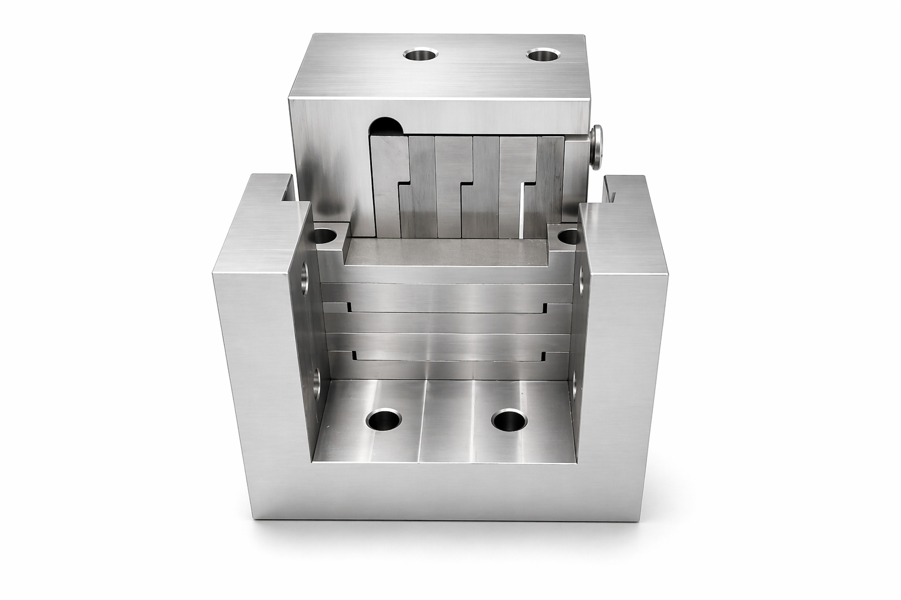

High Precision Tungsten Pinhole for Synchrotron Radiation Imaging
At PicomTech, we specialize in manufacturing high-precision tungsten pinholes, which are meticulously machined to form precise apertures. The tungsten material is processed into a stepped shape, which is then stacked to form narrow slits. By installing these slits in both horizontal and vertical directions, we create a pinhole that is ideal for X-ray pinhole camera applications at beam diagnostic beamlines to measure transverse beam sizes.

| Aperture Range | 10 µm – 100 µm |
| Thickness | 4 mm |
| Aperture Accuracy | ±3 µm |
| Material | Tungsten |
| Applications | Synchrotron radiation imaging, X-ray beam diagnostics |
If you would like to request a quote, or if you need more information about our tungsten pinhole, please get in touch with us.
Email: salepicomtech@gmail.com